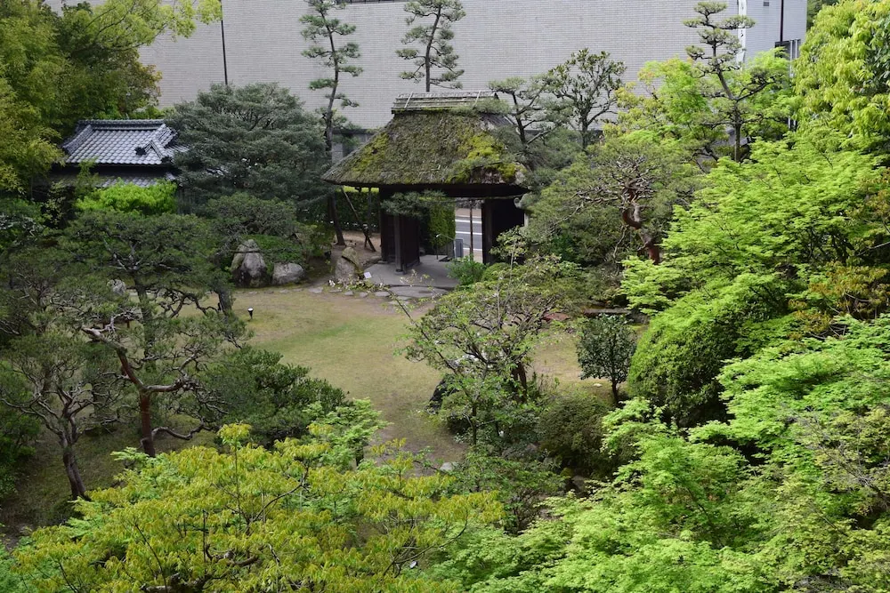
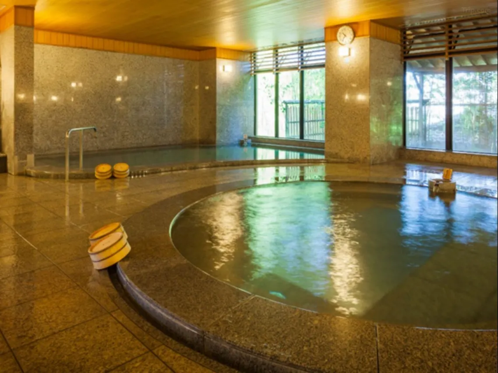
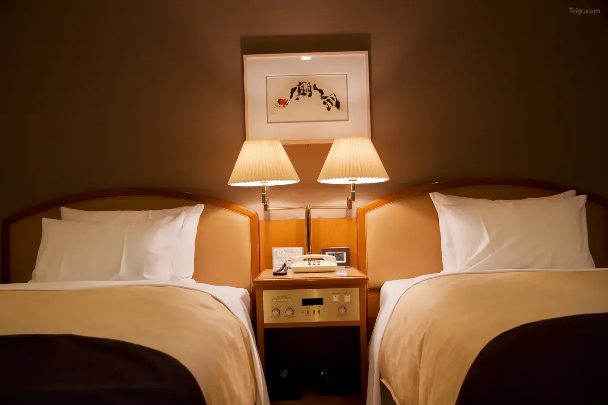
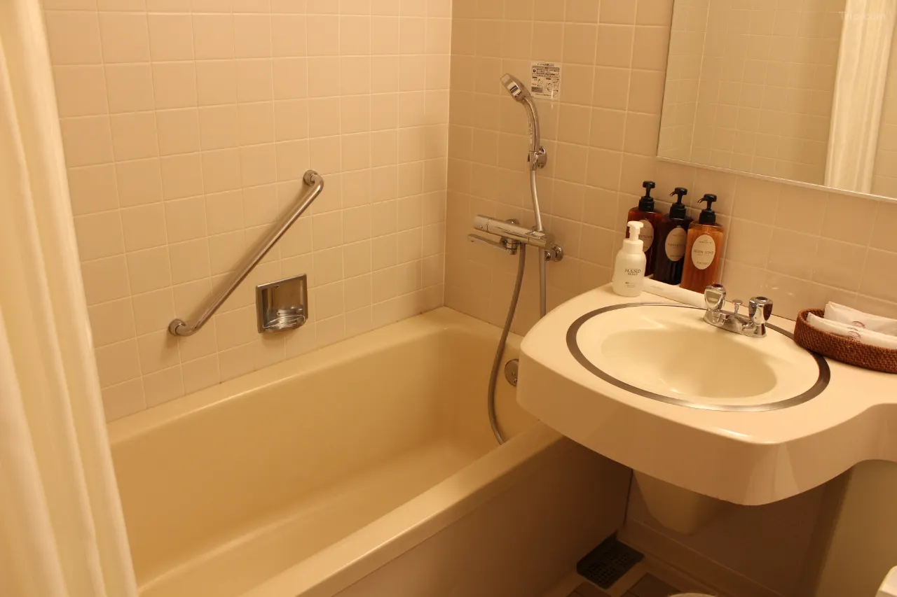
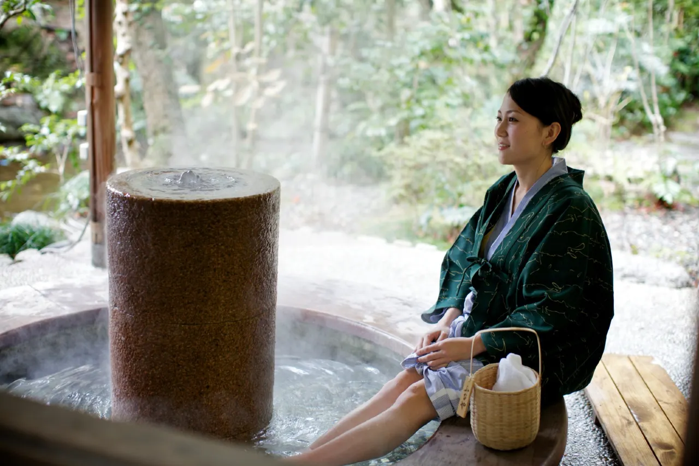
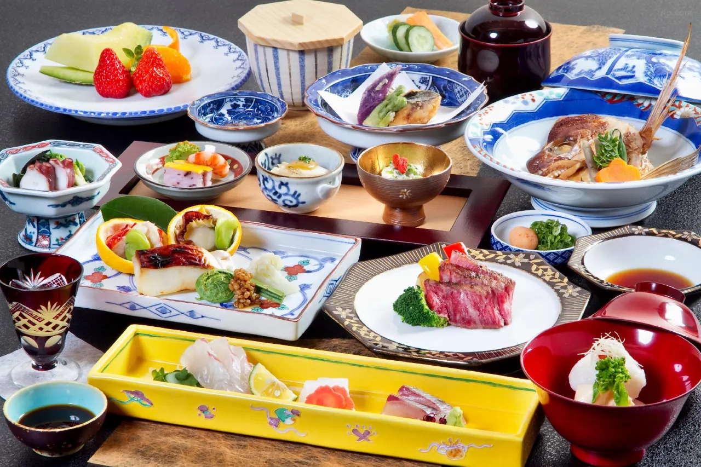
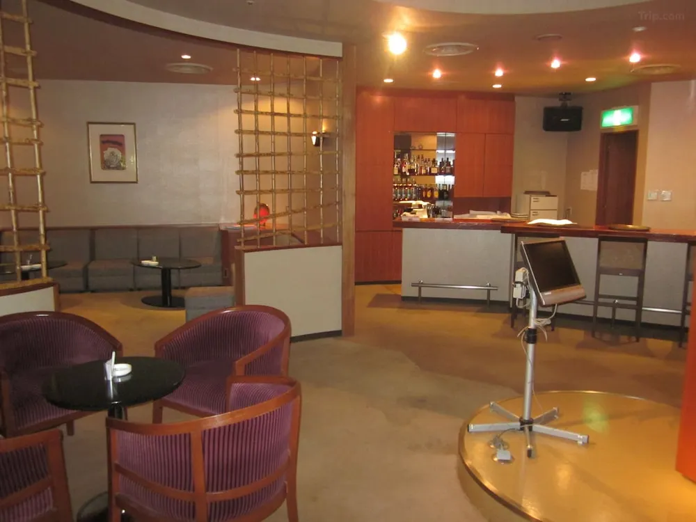
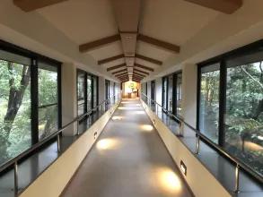

Three minutes on foot from the Spirited Away bathhouse, through a covered arcade of souvenir shops, past the glow of lanterns reflected in wet stone, there is a ryokan that has been receiving guests since approximately 1627. It has hosted Natsume Soseki, Japan's greatest novelist, who set two of his novels here. It has hosted Masaoka Shiki, Matsuyama's most celebrated haiku poet, who bathed in its waters during the Meiji era. Emperor Showa stayed here. The baths predate the Edo period. And three minutes away, unchanged in its essential character for over a century, stands the building that Hayao Miyazaki assembled into Yubaba's bathhouse.
Funaya is not the most famous accommodation at Dogo Onsen — that distinction belongs to the Honkan public bathhouse itself, the three-story wooden monument that Miyazaki's team documented during the production of Spirited Away. But the Honkan does not accept overnight guests. Funaya does. And staying at Funaya means waking before the morning crowds, walking to the Honkan before 6 AM when the Tokidaiko drum is struck to open the baths, and arriving at the most recognizable building in anime tourism before anyone else is there. This is the Dogo Onsen pilgrimage as it should be done.
Four Hundred Years of the Same Water

Funaya's founding date is recorded as approximately 1627 — the early Edo period, when Dogo Onsen had already been flowing for what the local legends describe as three thousand years. The spring is among the oldest documented in Japan: it appears in the Nihon Shoki, the eighth-century chronicle of Japanese history, and in the Man'yōshū, Japan's oldest anthology of poetry. The Emperor Jomei is said to have bathed here in 631 AD. By the time Funaya opened its doors, the spring had already been running for a millennium.
The current property spans 58 rooms across multiple room categories — Japanese-style sukiya-zukuri rooms, standard tatami rooms, Japanese-Western hybrids, and Western-style accommodation — all oriented toward a garden of approximately 5,000 square meters. The garden is the ryokan's quiet signature: 200 species of plants across a landscape designed around the small river that runs through the center of the property. From spring through autumn, dinner can be taken at tables positioned beside the river, with fireflies appearing in early summer, and the seasonal rhythm of the garden shifting behind them across each course.
The baths draw from the same Dogo spring that has served this town since before written Japanese history. Two large communal baths operate with alternating gender access: Hinoki-yu, a cypress bath whose wood releases a resinous warmth into the steam, and Mikage-yu, a granite bath built from Iyo Oshima stone. The mineral composition is a simple alkaline spring — clear, slightly viscous, neutral in smell — that has been described in every century of Japanese literature as beneficial to the skin and recuperative for the body. It does not smell of sulfur. It does not discolor the water. It is simply very old water, and it feels that way.
Soseki, Shiki, and the Literary Tradition of Dogo

Natsume Soseki arrived at Dogo Onsen in 1895, newly appointed as an English teacher at the Matsuyama Middle School. He was 28, and not yet the writer who would produce Kokoro, Botchan, and I Am a Cat. His time in Matsuyama lasted one year, and it produced Botchan — a satirical novel set in the city, with the Dogo Onsen baths appearing under their real name as the place the protagonist retreats to after the frustrations of provincial life. The novel is still read in every Japanese school. Soseki's fillet steak, a dish he apparently favored during his stay, remains on Funaya's menu.
Masaoka Shiki was Matsuyama's own — born here in 1867, he returned repeatedly to the town during the latter part of his life when tuberculosis had already begun to limit his movements. His haiku from the Dogo Onsen period document the specific quality of light in the arcade at different hours, the sound of the Tokidaiko drum at dawn, the sensation of stepping from cold air into a warm bath as a medical fact rather than a pleasure. He and Soseki were friends; they corresponded extensively during Soseki's Matsuyama year. The literary quality of Dogo Onsen is not a marketing invention. It is documented in the work of two of Japan's most important writers.
The Pilgrimage from Funaya's Front Door
The Dogo Onsen pilgrimage begins before most guests have had breakfast. The Tokidaiko drum at the Honkan is struck at 6 AM to signal the opening of the baths — a ceremony that has been performed every morning for over a century. At this hour, in the minutes before the arcade fills with day visitors arriving by tram from central Matsuyama, the Honkan stands essentially alone in the morning light. This is when its resemblance to Yubaba's bathhouse is most complete: the steam from the interior baths rising through the wooden gable vents, the stone approach empty and glistening, the three-tiered roof structure catching the early light against the sky behind it.
The covered shopping arcade — Dogo Onsen's Hōtoku no Michi, running the length of the approach to the Honkan — is the direct spatial model for the food stall street in Spirited Away's opening sequence, where Chihiro's parents gorge themselves on the spirit world's food before transforming into pigs. Walking it at dusk, as lanterns illuminate the storefronts selling Botchan dango and sudachi citrus products, the resemblance requires no imagination to complete. The architecture, the flow of people, the relationship between the arcade and the building at its end: all of it is in the film.
Funaya guests also have access to a footbath garden within the property — a long trough of Dogo spring water running through the garden, where guests can sit on the edge, remove their sandals, and soak their feet while looking out at the 200-species plantings. This is worth doing in the late afternoon, in the hour before dinner, when the garden light shifts to the horizontal gold that characterizes Ehime's early evenings from spring through autumn.
A Night at Funaya: Structure and Expectations
Stays operate on the full-board ryokan format: arrival in the mid-afternoon, yukata and tabi socks distributed at check-in, evening bath before dinner, dinner either in-room or in the communal dining hall, breakfast the following morning. The dinner format is kaiseki — a multi-course sequence of small preparations organized around the principle of seasonal ingredients — with Funaya's kitchen drawing from the Setouchi sea immediately to the north and the agricultural produce of the Ehime interior. Jyako-ten, the local fish paste tempura specific to Matsuyama, appears regularly. So does Obanazawa beef, and fresh river fish from the mountain streams of the Shikoku interior.
The French and Japanese-Western dining options are available for guests who prefer a different format, though the kaiseki dinner in a tatami room — plates arriving on lacquerware, the garden visible through the shoji screen — is the experience the ryokan was built to provide. Room selection matters: the sukiya-zukuri rooms are the most architecturally significant, with traditional joinery and paper screens that admit a particular quality of diffused light. Ask for a garden-facing room if the river view is available; the sound of water through an open shoji at night is part of the experience.
Practical Information
- Check-in: 3:00 PM Check-out: 10:00 AM
- Meals: Dinner and breakfast included in most plans
- Baths: Hinoki-yu (cypress) and Mikage-yu (granite) — alternating gender access
- Best time to visit: Spring (fireflies in garden, May–June) · Autumn (foliage, Oct–Nov) · any season for the Honkan pilgrimage
- From Tokyo: Haneda or羽田 → Matsuyama Airport (~1h 20min flight) → limousine bus to Dogo Onsen Station (~40 min) → 3 min on foot. Or: Shinkansen to Okayama → JR Limited Express Shiokaze to Matsuyama (~2h 30min) → tram to Dogo Onsen (~20 min)
- Dogo Onsen Honkan: Open 6:00 AM–11:00 PM (ticket sales close 10:30 PM) — 3 min walk from Funaya
- Language: Some English spoken; staff experienced with international guests
- Price range: ¥20,000–¥50,000 per person per night (dinner + breakfast included)
Getting to Matsuyama
Matsuyama is the capital of Ehime Prefecture on Shikoku island — accessible by air from Tokyo Haneda in approximately 80 minutes, or by Shinkansen and limited express train in under four hours. The city's tram network, operated by Iyotetsu, runs from Matsuyama Station to Dogo Onsen Station in approximately 20 minutes. Funaya is a three-minute walk from the tram terminus — close enough to arrive on foot with luggage, which the ryokan staff typically meet at the entrance.
The combination of Dogo Onsen Honkan and Shimonada Station — the sea railway platform from Spirited Away, accessible in approximately 40 minutes by JR Yosan Line from Matsuyama — makes Ehime Prefecture the most efficient Spirited Away pilgrimage base in Japan. Two of the film's key locations, one city, one night at Funaya. The logic of the itinerary organizes itself.
Why Funaya, Not One of the Others
Dogo Onsen has over a dozen ryokans. Several are larger. Several are newer. Several have more elaborate outdoor bath facilities. Funaya's distinction is the one that cannot be reproduced by any amount of renovation or construction: four centuries of continuous operation on the same ground, with the same water, producing the same specific quality of accumulated experience that only very old Japanese buildings generate. The literary history is documented. The garden took generations to develop. The kitchen has had since 1627 to refine its understanding of what the Setouchi produces.
And the Honkan is three minutes away. At 6 AM, when the drum strikes, Funaya guests are already there.
| Location | Dogo Onsen, Matsuyama, Ehime Prefecture, Shikoku |
| Category | Traditional Ryokan (Hot Spring Inn) |
| Anime Connection | Spirited Away — 3 min walk from Dogo Onsen Honkan (confirmed inspiration for Aburaya) |
| Founded | c. 1627 — over 400 years of continuous operation |
| Rooms | 58 rooms — sukiya-zukuri, tatami, Japanese-Western, Western |
| Garden | 5,000 m² Japanese garden — 200 plant species, riverside dining in season |
| Hot Springs | Dogo alkaline spring — Hinoki-yu (cypress) + Mikage-yu (Iyo Oshima granite) |
| Price Range | ¥20,000–¥50,000 per person per night (dinner + breakfast) |
| Notable Guests | Natsume Soseki · Masaoka Shiki · Emperor Showa |
| Nearest Station | Dogo Onsen Station (Iyotetsu tram) — 3 min on foot |
Photo Gallery

Photo 1
Photo 2
Photo 3'">
Photo 4'">
Photo 5'">
Photo 6'">Stay Three Minutes from the Spirited Away Bathhouse
Check availability at Dogo Onsen Funaya — and book the morning drum ceremony into your itinerary.
Want the full Spirited Away pilgrimage across Japan? Read our complete guide: Through the Tunnel — Every Real-Life Spirited Away Location in Japan →
← Back to Stay